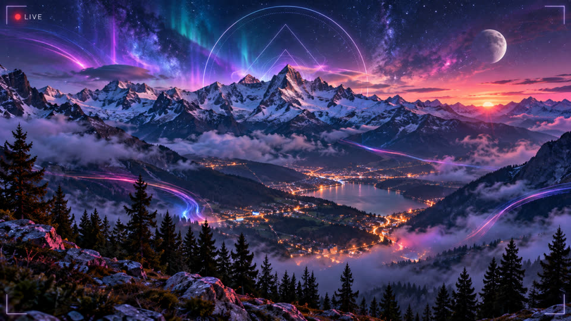

Live webcam
LIVE RASPBERRY PI 5
On the stream
Under each card a reel keeps the day, sure catches over motions, reset to 0/0 at each side’s own midnight. Twenty-one ways the picture changes sit with that. Pixel, grey and wave share one draw every seven minutes, and two draws out of five leave the photograph alone. The set pieces take the stage one at a time. At night those set pieces come three times as often. The bear keeps his own pace.
| Name | What happens | |
|---|---|---|
| Day | The left card is the day in Los Angeles and the right card is the day in Beaumont-du-Ventoux. A reel is glued under each card. It reads sure catches over motions, 0/0 until that day has seen a motion. A catch counts on both sides. At midnight on a side, NEW DAY IN LOS ANGELES or NEW DAY IN BEAUMONT is written under the picture for eight seconds, and that reel returns to 0/0. The higher ratio is green. An equal ratio stays white. Temperature and load sit under the picture on the machine card. | |
| Pixel | Every seven minutes the stream draws one treatment from five slots, and two of those slots are empty, so the photograph often stays as it is. When the draw is pixel, the frame shrinks to twenty-six columns and is enlarged again, nearest neighbour, for twenty seconds. It fades in and fades out over three and a half seconds at each end. Twenty-six columns leave the road and the crest recognisable. Pixel, grey and wave never run together. For four seconds after something named is on screen, they stay off, so the thing in the rectangle stays a thing you can look at. | |
| Grey | The same draw, the same twenty seconds, the same fade. Colour mixes toward perceived luminance: a blue sky and a green slope of the same arithmetic mean do not have the same lightness to the eye, and the mix follows that lightness. At full strength the slope is grey, then the colour returns. | |
| Wave | The same draw. Twenty-eight horizontal bands slide sideways, by up to three percent of the width, as if the picture were under water. The Pi shifts whole rows. A remap of every pixel would be too heavy while it is encoding. | |
| Flyover | After five minutes with nothing named, and while no replay is up, the relief takes the camera window and stays still, on the webcam’s own viewpoint, so a detection drawn on the live picture lands in the same place on the model. By day the render is left as it is, for two minutes. At night it is the same frame, darkened, for a minute and a half, and the picture-book lamp is drawn lit on it: the model has no bulb of its own. A sunlit model on a black slope would say the wrong hour. It stays up when something is seen, and the rectangle stays on it. Half an hour passes before the next one. The live picture stays in a small window. The dancers stay off this view. The Pi opens a picture it already has. | |
 | Catch | A catch is a name the watch trusts while the thing is still in the picture: a car, a walker, a bike, a bus, a truck, a plane. The stream sits a few seconds behind the watch, so the celebration waits until that subject is on screen and the rectangle is drawn around it. GOOD CATCH! then crosses the mountain in green for a second and a half. A white flash dies in half a second. The name sits under the words, because the cheer alone does not say what was taken. At the same time the letterbox around the camera window lights in the colour of that kind of passage, for three and a half seconds, and the name is written large under the picture, over the cable and the top of the music console. Pixel, grey and wave hold off for four seconds, so the thing that passed stays a thing you can look at. The mountain itself stays the photograph. |
| Console | While a track plays, a console spans the width under the picture: the cover just finished, the one playing, and the next two. With the playing track sit the artist, the title, the licence and the domain of the file, the credit a stream can show where nothing is clickable. An equaliser follows the music. The release number of this build stays written there for the whole session. | |
| Bear | A wooden bear stands beside the path between the roundabout and the sheepfold. The scene map measures him at 1.73 m tall and 0.64 m wide, twenty-five metres from the lens. Every two hours and a quarter a cutout taken from him at noon walks to the island in two and a half seconds, dances there for ten seconds, weeps, and shouts THIS IS MY HOME!!!!! Ninety seconds of delay hold the first dance until YouTube has opened the picture. The sculpture stays where it is, so both are in the picture together. On the island a metre is forty-three pixels, against forty-seven where he stands, and once he is dancing the cutout swells a little so he reads. A photograph of the real sculpture fades into the black band for the dance. He keeps this pace at night: the roundabout stays lit by the chalet lamp, and the double stands in that light. Night does not speed his turn. | |
| Carpet | Every six minutes and thirty-seven seconds, when the music is pushing, a flying carpet crosses the whole frame in fourteen seconds, black bands included. It follows the crest, so it clears the summit. The figure on it is the same puppet as the two in the corners. If another number already holds the stage when this turn starts, the carpet waits for the next turn. | |
| Submarine | Every eight minutes and forty-three seconds the yellow submarine from benoit-prieur.fr crosses the sky in twenty-two seconds. It follows the crest and pitches a tenth of its height, two and a half times during the crossing. It stays above the road, so it crosses on its turn whether the music is pushing or the slope is quiet. If the drawing is missing on the Pi, the crossing does not happen. | |
| Piste | Every thirteen minutes and seven seconds, for twenty seconds, a surfer descends the André Philip run. The line is that piste as OpenStreetMap records it, projected with the camera pose and the terrain. White draws behind him and fades ahead of him, so the stroke leaves the mountain with him. He weaves through five turns and leans into each one. He is the same puppet as the corners, drawn smaller because he is far up the slope. | |
| Elephant | Between one and six in the morning, after five minutes with nothing named on the road, a pink calf fills the frame for four seconds. His turn comes every eleven minutes and one second, and only while the music is pushing. He is the one drawing that covers the road, which is why he waits for that lull. A trunk to the left, a small solid eye. | |
| Building | Every seventeen minutes and forty-one seconds, for fourteen seconds, the wireframe of one building draws itself, holds, and fades. The footprint comes from OpenStreetMap and the roof height from the terrain model, both projected into the picture: the foot, then the walls, then the roof. One building at a time, the five widest in turn. The sheepfold runs past the right edge of the camera window, and the wire continues into the black band, at the place that wall would occupy if the camera saw wider. | |
| Sun | When the sun is up and still behind the ridge, or the weather is cloud, overcast, fog, mist, rain, snow or storm, a child’s sun is drawn into the picture: a circle, eleven uneven rays, a smile. It sits where the real sun falls in the frame. When that point is outside the view, it sits in the corner of the sky, on the side where the sun actually is, once the sun is at least three degrees up. It breathes, about one turn in ten seconds. It is drawn before pixel and wave, so those treatments take it with the mountain. | |
| Lamp | At night, once the sun is at or below the horizon, a picture-book lamp is drawn on the real street lamp. The pole follows the measured mast from foot to shoulder, and the bracket runs from the shoulder to the lantern the map places on the bulb. The mast is seven metres, and its length in the picture comes from that height, the distance and the lens. The glow is the lamp’s own light, turned up around the bulb, and it breathes slowly. A camera whose pole was never measured gets no lamp. It is drawn before pixel and wave, so it takes their grain. | |
 | Machine | Every twenty-four minutes and forty-three seconds, for seven seconds, a round photograph of the Pi fills about a third of the camera window, with the words Thanks Raspberry! Two minutes of delay let YouTube open the picture before the portrait arrives. The road stays visible around the disc. The small badge in the corner stays, so the portrait reads as a second view of the same machine. |
 | Dogmazic | Every twenty-six minutes and forty-seven seconds, for the same seven seconds, their orange dog fills that disc, with the words Thanks Dogmazic! Nine minutes of delay keep this portrait clear of the Raspberry’s turn after a restart. |
| Replay | After five minutes with nothing named, a past passage comes back for ten seconds. The word replay and the date sit with the picture, so the archive stays distinct from the live road. Only a passage marked accepted can return. On air the picture is blocked into large squares; the file on disk stays sharp. It is never enlarged more than three times, and it stays within a third of the width. Ten minutes pass before another. A sung replay announces it. The moment something new is seen, the archive leaves. The card is amber. | |
| Meeting | Two puppets stand in the lower corners of the camera window when the music is pushing, drawn half transparent so the slope stays in front. About every seven minutes they leave those corners, meet in the middle of the window, hold for six seconds, and go home, four seconds each way. Between meetings they also step out into the black bands for a few seconds. During a flyover they are left off the relief. | |
| Deployed | When the stream restarts, DEPLOYED appears in cyan at the centre, and the version number under it, for six seconds. It rises in three fifths of a second and leaves in four fifths. A voice says Deployed. Four fifths of that voice pass straight through. The rest is multiplied by a ninety-hertz tone, so the word stays a word and still sounds like a machine. The number stays written, because a recorded voice cannot follow a version that changes at every delivery. | |
| Friend | Twice a day a voice says: To my very good friend David Vincent or Vincent David or David Vincent, Je pense à toi. The line DAVID VINCENT OR VINCENT DAVID stays written for seventeen seconds. Then a voice says Big up to the Normandy! and the picture writes BIG UP TO THE NORMANDY! The two hours are drawn once for the date, between eight in the morning and eleven at night, Paris time, at least three hours apart, and a restart does not move them and does not say them twice. | |
 | Dijon | The first collaboration, with Butterbane. Every day at 23:00 and again at 23:15, Paris time, his logo sits in the camera window and the mountain takes a mustard grade. The line reads UNE COLLAB AVEC BUTTERBANE, and the hour is written above the logo. At 23:00 a voice says Il est vingt-trois heures à Dijon. At 23:15 it says Il est vingt-trois heures quinze à Dijon, and then Butterbane says it in his own voice. A restart does not say a turn twice. Butterbane |
3D view
Camera
Fixed, facing 140°.